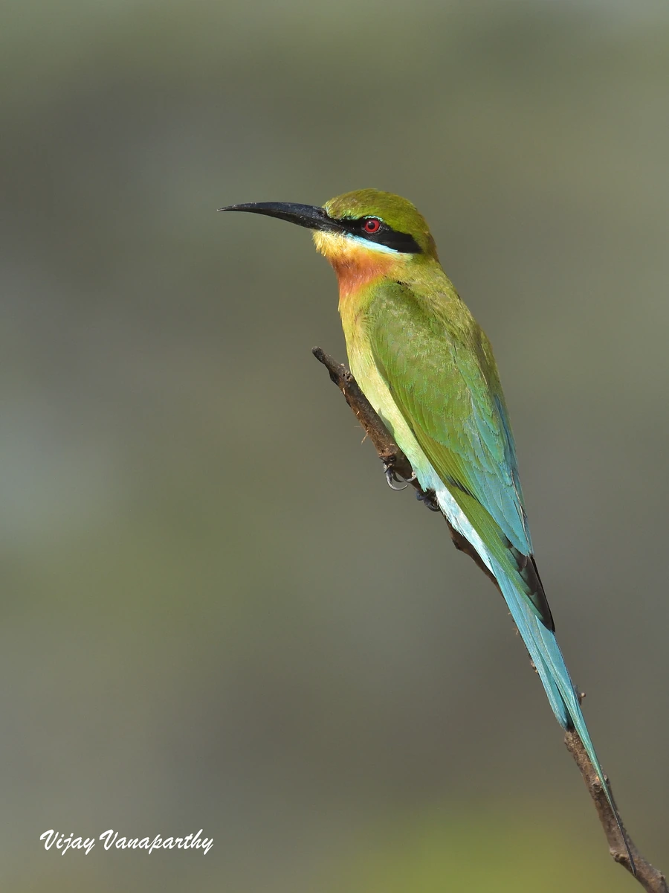

鸟类 · 动物界
栗喉蜂虎 Merops philippinus

羽色艳丽的蜂虎，背羽翠绿、腰尾亮蓝、喉部栗红，眼纹黑色如戴面罩。常成群在沙崖上挖洞营巢，空中捕食蜂类与蜻蜓。
- 分类
- 门脊索动物门纲鸟纲目佛法僧目科蜂虎科属蜂虎属
- 栖息环境
- 河流沙岸、湖泊周边、稻田、草甸、疏林与采砂坑，需要裸露沙土崖壁供群体挖洞。
- 地理分布
- 南亚、东南亚至中国南方；中国见于云南、广西、广东、海南、福建等地，部分种群迁徙。
- 保护级别
- IUCN 红色名录列为无危（LC）；中国列入“三有”陆生野生动物名录。
物种志
栗喉蜂虎体长约二十三至二十六厘米，体重三十至四十五克，尾羽中央两枚延长成细针状。通体色彩鲜明：头顶与背羽翠绿，腰部和尾羽亮蓝色，喉部栗红色，胸腹浅绿至淡黄；眼先和眼周黑色，形成一道醒目的“黑眼罩”。喙细长而尖，黑色；虹膜暗红，脚灰黑色。雌雄羽色相似。
它栖息于河流、湖泊、稻田、草甸与疏林边缘，常成数十只的群体在空中快速穿梭，捕食蜜蜂、胡蜂、蜻蜓、蝴蝶等飞行昆虫。捕到蜂类后，它会将猎物在枝上摔打，去除毒刺和毒囊再吞下。繁殖期在沙岸、土崖或采砂坑壁上群体挖洞营巢，隧道深可达一米，每窝产卵四至六枚。栗喉蜂虎繁殖于南亚、东南亚至中国南方，北方种群冬季南迁。中国境内见于云南、广西、广东、海南、福建等地，列入“三有”名录。
形态与习性
- 体长23–26 厘米（含延长尾羽）
- 体重30–45 克
- 食性蜜蜂、胡蜂、蜻蜓、蝴蝶等飞虫
- 繁殖沙崖群体挖洞营巢，每窝 4–6 枚
- 特征绿背、蓝尾、栗喉与黑色眼罩
- 保护级别IUCN 无危；“三有”动物
趣味知识
- 捕到蜂类会先摔打去掉毒刺，再整只吞下。
- 几十对鸟会在同一面沙崖上挖洞，形成“蜂虎墙”。
- 尾羽中央的两根细长羽毛像一对蓝色长针。